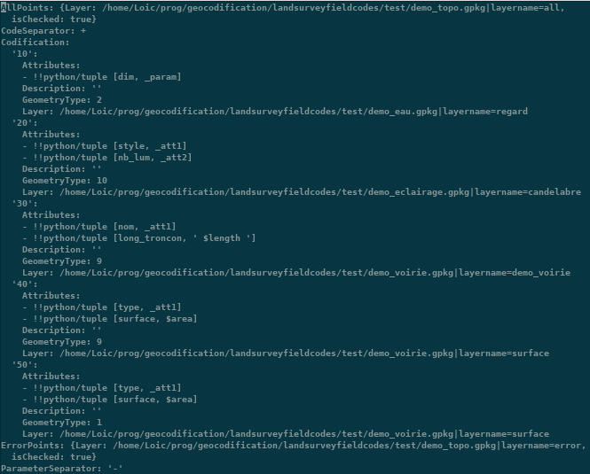
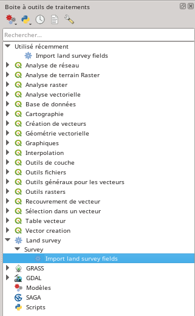

Bienvenue sur la documentation de Land survey codes import¶
Principe général¶
Le fonctionnement de ce plugin reprend les principes de codification en topographie. Le service topographique doit d’abord créer une codification qui servira aux opérateurs sur le terrain. Sur son carnet de terrain numérique, lorsqu’il relèvera un point, l’opérateur entrera également un code. L’opérateur à la possibilité de lever plusieurs codes pour le même point. Ce levé codifié, permettra la génération automatique du dessin, avec la possibilité de pré renseigner des attributs qui seront traités par la suite. L’administrateur SIG aura la possibilité d’enchaîner l’import avec le traitement grâce au traitement QGIS.
L’outil propose(ra) de générer les éléments suivant pour chaque type de géométrie :
| Type | Point | Ligne | Polygone | Nombre de points | Nombre de paramètres | Présent |
| Cercle par 2 points | X | X | X | 2 | 0 | Oui |
| Cercle par 3 points | X | X | X | 3 | 0 | Oui |
| Cercle par le centre et le rayon [1] | X | X | X | 1 | 1 | Oui |
| Cercle par le centre et le diamètre [1] | X | X | X | 1 | 1 | Oui |
| Carré par 2 points | X | X | X | 2 | 0 | Non |
| Carré par 2 points en diagonale | X | X | X | 2 | 0 | Non |
| Rectangle par 2 points et la hauteur [1] | X | X | X | 2 | 1 | Non |
| Rectangle par 3 points (3ème point = distance depuis le 2ème point) | X | X | X | 3 | 0 | Non |
| Rectangle par 3 points (3ème point = projeté orthogonale) | X | X | X | 3 | 0 | Non |
| Ligne [2] | X | X | Minimum 2 | 1 | Oui | |
| Point | X | 1 | 0 | Oui |
Explication sur les paramètres¶
Signifie que le code doit avoir un paramètre et que celui-ci est de type numérique. Exemple du cercle par un centre et le rayon. Vous renseignez le centre du cercle par un point dont le code est 100 et vous devez renseigner le rayon (dans l’unité de la projection) en accolant le caractère de paramètre et la mesure, soit 100-1 pour un cercle d’un mètre de rayon.
[2] une ligne est traité de façon spéciale puisqu’elle a besoin d’une information indiquant l’ouverture et la fermeture de la ligne, ainsi que des changements de nature (arcs - non implémenté pour le moment). En prenant pour exemple, une ligne avec un code de 100, cette ligne a 4 points doit être renseignée de cette façon :
- 1,…, 100-1
- 2,…, 100-2
- 3,…, 100-2
- 4,…, 100-9
Création de la codification¶
La préparation de la codification ne peut se faire sans avoir au préalable ouvert un projet qgis contenant les couches dans lesquelles les données seront insérées. Pour les moments les couches doivent être dans des geopackages. Il n’y a pas de limitation quant aux nombres de ces geopackages. Une bonne pratique est de regrouper les couches dans des geopackages thématiques : eau, assainissement, voirie, etc. Si la donnée est dans une base postgresql, il est possible de les exporter dans des geopackages via l’outil « Empaquetage de couche ».
En cliquant sur l’icône , la fenêtre de configuration de la codification apparaît.

Paramètres généraux¶
Les paramètres généraux définissent les séparateurs utilisés. Un séparateur pour indiquer les différents codes sur un même point et un séparateur pour indiquer les paramètres. Ceux-ci doivent être adaptés en fonction des capacités du carnet de terrain.
Codification¶
« Code » peut être alphanumérique, aucune restriction n’est imposée, mais il faut qu’il soit compatible avec votre appareil. Il est préférable de ne pas insérer d’espaces ou de caractères spéciaux
Il est possible d’ajouter un commentaire sur le code dans le champ « Description ».
La « Géométrie » est à choisir parmi celle indiquée ci-avant. Elle est filtrée sur la géométrie de la « Couche de sortie » depuis le « GeoPackage » sélectionné en dessous.
Attributs¶
Vous avez la possibilité de générer automatiquement des attributs dans les colonnes de la couche en utilisant les mêmes principes que le calculateur d’expression de QGIS. Attention, toutefois celui-ci n’a pas vocation à accepter des requêtes complexes, il est préférable de réaliser cette étape après l’import des données.
Si les données exportées du carnet possèdent des attributs supplémentaires, il est possible de les intégrer en spécifiant dans le champ expression “_attN” ou N correspond au numéro du champ (en commençant par 1). Il n’y a pas de limitation sur les attributs tant que le fichier CSV est conforme.
Points spéciaux¶
Les points en erreur peuvent être ajouté dans une couche particulière tout comme l’ensemble des points relevés.
On appelle erreur, les points qui ne sont pas conformes à la règle de codification, par exemple code devant avoir 3 points et n’ayant que 2 points, etc.
Ouverture / Enregistrement¶
Le menu Fichier permet l’ouverture, fermeture, enregistrement, etc. de la codification.
La codification est enregistrée dans un format YAML dont l’extension est .qlsc

Import des points¶
Principe général¶
À ce jour, l’outil ne permet la lecture que des fichiers CSV, l’opérateur doit donc exporter sa donnée au format CSV devant respecter cet ordre : Identifiant du point, Coordonnée x,Coordonnée y,Coordonnée z, Code, Attribut 1, Attribut 2, …, Attribut N

L’outil va séparer les codes qui sont sur un même point, pour ensuite les apparier suivant leur code. Par exemple un csv comme :
“2”, “1980244.900”, “5190520.938”, “1002.461”, “300+200”
“3”, “1980249.438”, “5190515.953”, “1002.329”, “101”
“1”, “1980242.941”, “5190519.460”, “1002.521”, “200+300”
sera transformé en:
“2”, “1980244.900”, “5190520.938”, “1002.461”, “300”
“2”, “1980244.900”, “5190520.938”, “1002.461”, “200”
“3”, “1980249.438”, “5190515.953”, “1002.329”, “101”
“1”, “1980242.941”, “5190519.460”, “1002.521”, “200”
“1”, “1980242.941”, “5190519.460”, “1002.521”, “300”
puis :
“3”, “1980249.438”, “5190515.953”, “1002.329”, “101”
“2”, “1980244.900”, “5190520.938”, “1002.461”, “200”
“1”, “1980242.941”, “5190519.460”, “1002.521”, “200”
“2”, “1980244.900”, “5190520.938”, “1002.461”, “300”
“1”, “1980242.941”, “5190519.460”, “1002.521”, “300”
L’outil traitera les codes à la file, une attention particulière est demandé à l’opérateur saisissant les codes car une erreur de saisie décalera la codification et le dessin en résultant.
Importation via le processing¶

L’import se fait via un nouveau module dans le processing.
L’outil demande le fichier de configuration (fichier .qlsc) et le fichier de points (.csv)

Résultat¶
À la fin de l’import, il faut rafraîchir le canevas pour voir apparaître le dessin. Les données s’affichent évidemment avec le style déterminé dans le projet.